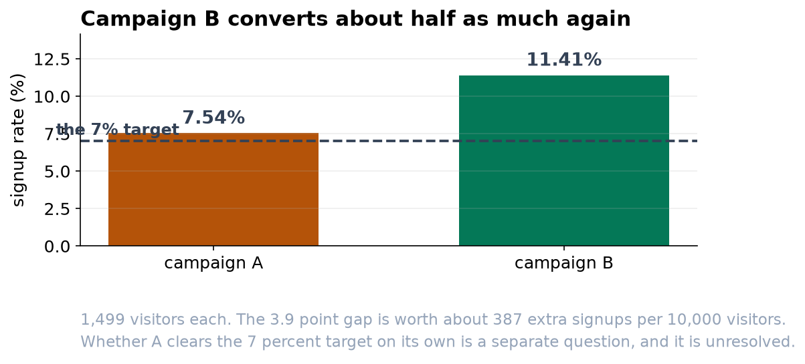

Campaign B Wins; Whether A Hits Target Is Still Unresolved
B converts about four percentage points better than A. A itself sits too close to its 7 percent target to call.
Recommendation
Run campaign B. It converts at 11.41% against A's 7.54%, a gap of about 3.9 percentage points that is well beyond chance. On 10,000 visitors that is roughly 387 additional signups. Separately, do not report that campaign A beat its 7 percent target: it came in slightly above, but not by enough for us to be sure it is genuinely above rather than below.
Question 1: did campaign A clear the 7 percent target?
Campaign A signed up 113 of 1,499 visitors, a rate of 7.54%. That is numerically above the 7 percent target, and it is tempting to call it a win. But the range we are 95 percent confident contains A's true rate runs from 6.3% to 9.0%, and 7 percent sits comfortably inside it. In other words the data are just as consistent with A running a little below target as a little above it. The honest answer is that we cannot tell yet, and a bigger sample would be needed to settle it.
Question 2: does campaign B beat campaign A?
Here the answer is clear. B converted 171 of 1,499 visitors, or 11.41%, against A's 7.54%. The gap is 3.87 percentage points, and we are 95 percent confident the true gap lies between 1.8 and 6.0 points. Because that whole range is above zero, B is genuinely better, not luckier.


How to state the size of the win
The same result can be written two ways. As a relative figure it is a 51% lift, which sounds dramatic. As an absolute figure it is 3.9 percentage points, or about 387 extra signups per 10,000 visitors, which sounds modest. Both are true. Because our base rate is small, the relative number flatters the result, so I would lead with the absolute figure and the concrete signup count, and mention the percentage lift only alongside it.
Before you act
This comparison only measures the campaigns themselves if visitors were split between them at random. If A and B ran on different pages, days, or audiences, we are partly measuring those differences instead. Also worth watching: a campaign can raise signups by over-promising, which shows up later as churn rather than as a worse signup rate. Track what these signups do next before treating the win as settled.